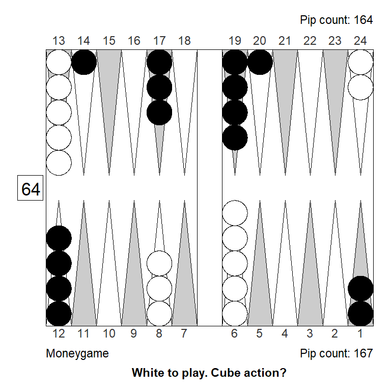
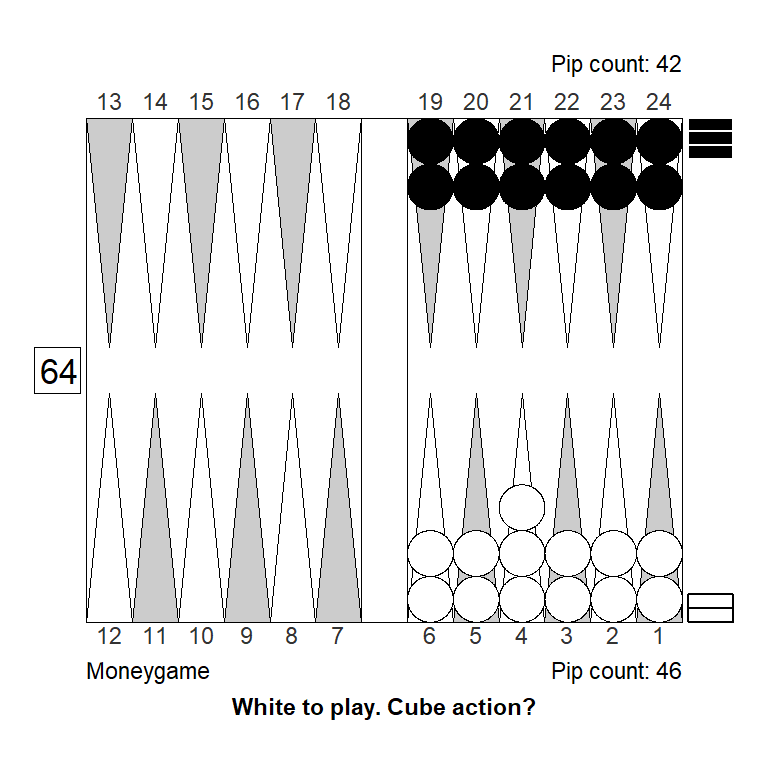
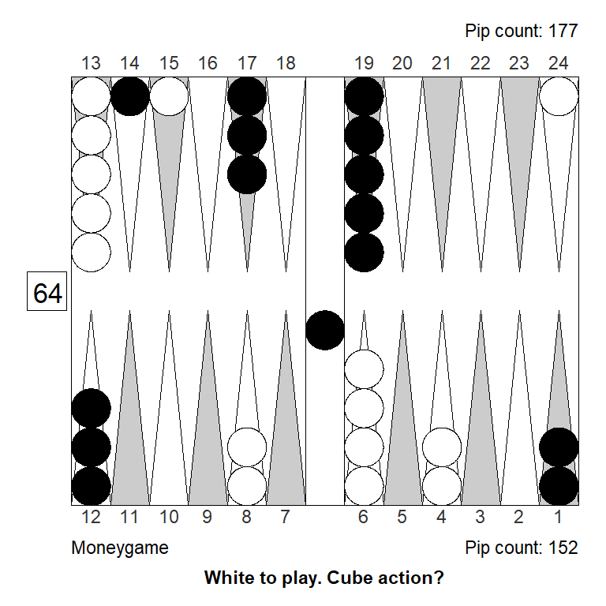
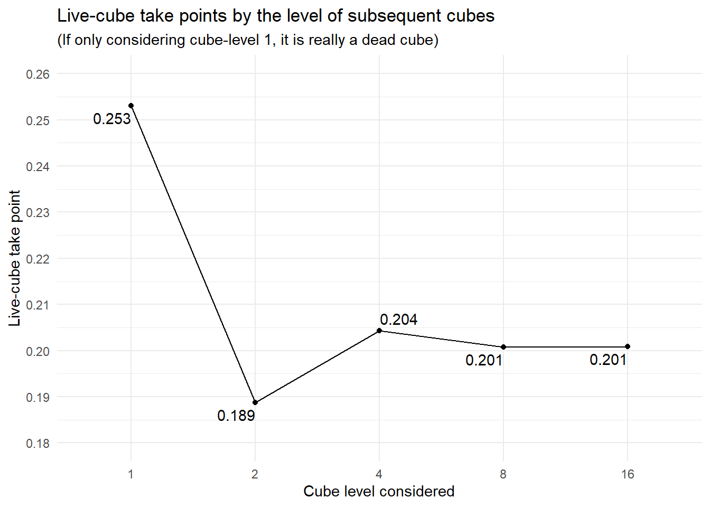
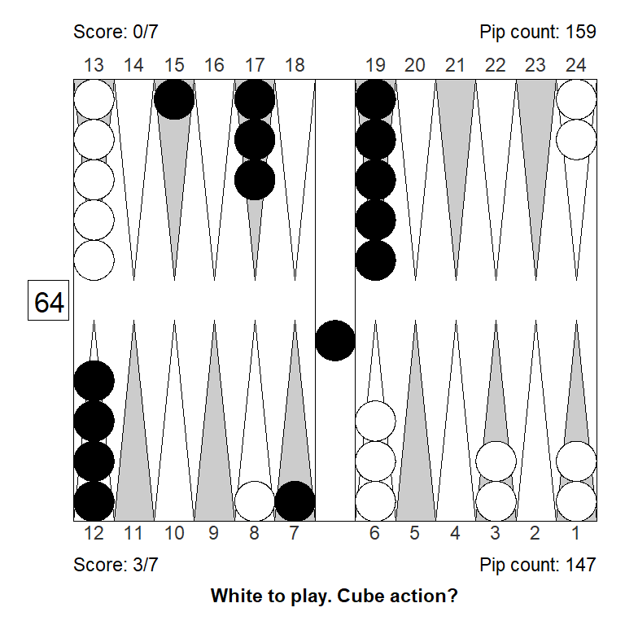

| Regular | Gammon | Backgammon | Sum | |
|---|---|---|---|---|
| Player wins | 0.47 | 0.17 | 0.01 | 0.65 |
| Opponent wins | 0.31 | 0.04 | 0.00 | 0.35 |
| Sum | 0.78 | 0.21 | 0.01 | 1.00 |
Janowski Formulars
Why this?
This note is for better understanding exactly what eXtreme Gammon and GNU Backgammon do to estimate cubeless and cubeful equities at money and match play. In particular, we apply the Janowski Formular(s) and try to figure out what it means when the eXtreme Gammon Documentation says that “In eXtreme Gammon the Janowski formula has been extended to apply also in match play”.
How XG and GNU BG works
They basic mechanism is this:
A neural net evaluates a position and come up with six probabilities for either winning or losing a regular game, a gammon and a backgammon. The estimated probabilities are for cubeless money game: What will happen if the game is played to conclusion with no doubling cube at money game conditions.
To improve the quality of this estimate, a weighted average of all possible positions after one and after two rolls is calculated; what we call 2- and 3-ply evaluations. The initial neural net evaluation is 1-ply. (In GNU BG, the corresponding plies are called 0, 1, 2, etc.)
From the estimated probability distribution, it is easy to calculate an expected, or average outcome, the equity of the position. This is still assuming money game with no doubling cube. Since that situation never happens under official rules, this number is not terribly relevant. Therefore, XG tries to estimate what the cubeful equity is, using formulas develped by Rick Janowski.
Janowski formulas
We won’t explain in detail how all of Rick Janowski’s formulas work (that is in the article linked above), we’ll explain the idea and discuss examples.
First, money game.
Money game
As mentioned, a game of backgammon played to conclusion can end in six possible ways. A certain position in Janowski’s article, have the following probabilities of each outcome:
The average win is then:
\[W=\frac{47 \times 1 + 17 \times 2 + 1 \times 3}{47 + 17 + 1} = 1.292\ points\]
The average loss will be:
\[L=\frac{31 \times 1 + 4 \times 2 + 0 \times 3}{31 + 4 + 0} = 1.114\ points\] The values are all assuming a cube-level of 1, also called normalized values. To get the monetary value, they will have to be multiplied by the cube value and the stakes per point.
The take point, not taking re-cubes into account, aka the dead-cube take point, is:
\[TP= \frac{L-0.5}{W+L}\]
This is just another way to express the familiar take point formula, most often written like this:
\[TP= \frac{Risk}{Gain + Risk}\]
So, as an example, using the above figures for average wins and losses, our dead-cube take point would be:
\[TP = \frac{1.114 - 0.5}{1.292 + 1.114} = 0.255\]
The dead-cube take point is what we might use in a last roll situation: When the opponent will either win or lose on the next roll, and we will never get the opportunity to redouble.
The opposite situation is what we might call the live-cube take point, where we unrealistically assume that our redoubles will always be fully efficient; we will redouble exactly at our opponent’s take point, when he or she will be indifferent between taking and passing.
The real take point for most positions is somewhere between these two extremes: Lower that the pessimistic dead-cube take point, but higher that the overly optimistic live-cube take point.
The continous model
To calculate the live-cube take point, we need to briefly visit the so-called continuous model, proposed by Keeler and Spencer, as long back as 1975, in an article called Optimal Doubling in Backgammon.
The basic idea is simple: Suppose the winning chance in some game moves smoothly and randomly along. \(E\) is the event that the winning probability, \(x,\) of player A, rises to \(x+b\) before it drops to \(x-a\). The probability of \(E\) is then:
\[P(E) = \frac{a}{a+b}\]
This applies to any game where winning chance move continuously as time passes. Wheeler and Spencer has a nice example from basketball, paraphrased like this:
Suppose UCLA has a 90% chance of beating MIT. What is the probability that MIT will have 50% chance of winning at some point during a game? In other words, the probability of MIT winning will have to rise from \(0.1\) to \(0.5\) before it drops from \(0.1\) to \(0.0\). So \(a = 0.1, b = 0.4\). Then:
\[P(E) = \frac{0.1}{0.1+0.4} = 0.2\]
The probability that MIT will at some point have an even game is: \(0.2 = 20\%\).
Applying this to backgammon, let’s assume that we accept a cube with winning probability of \(0.2\) and that we can double our opponent efficiently out if we reach a winning probability of \(0.8\). What are our actual winning chances then, assuming a perfectly continuous game? We need to improve from \(0.2\) to \(0.8\) before we deteriorate from \(0.2\) to \(0.0\) so \(a=0.2, b=0.6\), and:
\[P(E) = \frac{0.2}{0.2+0.6} = \frac{1}{4} = 0.25\]
In other words: The optimistic live-cube model would allow us to take a gammonless game with a cubeless winning probability of just \(0.2\) since cube access would turn that into the necessary \(0.25\) winning probability. (Keeler and Spencer has a more formal proof of the \(0.2\) live-cube take point.)
As mentioned, the real-life take point would have to be found somewhere between the live-cube take point of \(0.2\) and the dead-cube take point of \(0.25\). We can think of it as the weighted average of the two, where the weight represents the cube efficiency or what Janowski calls the cube-life index.
Experiments show that in long races the take point is about \(0.215\), suggesting a cube efficiency of \(0.7\) since \(0.7\times 0.20 + 0.3\times 0.25 = 0.215\)
Incorporating this into the Janowski formular for take points, we can get an estimated, “real” take point, that takes recubes and cube efficiency into account:
\[TP= \frac{L-0.5}{W+L+0.5x}\]
where \(x\) is what Janowski calls the cube-life index, a number between 0 (where the cube is dead) and 1, where all doubles are efficient, i.e. right at the borderline between a take and a pass.
Equity from cube location
Expanding the above ideas, the Janowski-formulas can be rearranged to express the equity, as a function of game winning chances, \(p\), cube efficiency, \(x\), and cube location (player, center, opponent):
\[E_{player}= p(W+L+0.5x)-L\] \[E_{center}= p(W+L+0.5x)-L-0.5x\] \[E_{opponent}= \frac{4}{4-x}(p(W+L+0.5x)-L-0.25x)\]
From these, we can estimate cube actions and the size of any cube errors.
A couple of observations:
It shouldn’t be too difficult to extend this to match play, since \(W\) and \(L\) can be calculated with match equities, rather than 1, 2, 3 for regular, gammon and backgammon.
It is a simplification to assume that gammon frequencies and cube efficiency remain constant through a game; near conclusion games are more likely to be races without gammons and with fewer opportunities to double efficiently. (Of course, any mathematical model is a simplification, in fact, that’s the whole point of such models.)
Let’s do a few practical examples and check if the formulas agree with what XG says.
Examples
Opening position
Let’s look at a position after Black opens with 21, slotting:

According to XG 1-ply, the probabilities of the six possible outcomes of the game, if played to conclusion, are as follows:
| Regular | Gammon | Backgammon | Sum | |
|---|---|---|---|---|
| Player wins | 0.3571 | 0.1316 | 0.0102 | 0.4989 |
| Opponent wins | 0.3654 | 0.1285 | 0.0072 | 0.5011 |
| Sum | 0.7225 | 0.2601 | 0.0174 | 1.0000 |
This comes to a cubeless equity of: \(E = 0.0069\); White is a slight underdog to win, but is compensated by a tiny bit of extra gammons and backgammons, so that the game is basically even.
Note that the numbers that XG reports are probabilities for winning (including gammons and backgammons), gammon (including backgammon), and backgammon. They have to be converted to get probabilities that sum to 1, like in the above table, if one prefers that way of looking at it. (My R-package, backgammon has a function for that.)
If we apply Janowski’s take point formulars to the above cubeless probablities, we get:
| Cube | Black's take point | White's take point |
|---|---|---|
| Dead | 0.3107 | 0.3032 |
| Perfectly live | 0.2604 | 0.2541 |
All these four numbers align perfectly with what you get when you consult XGs Analyze|Cube Information menu. GNU Backgammon, in Analyze|Market Window, also gives the exact same take points. We can conclude that both programs probably implemented Janowski’s take point formular in the same way for money games.
Of course, the interesting bit is the actual take points; the “Dead” and “Perfectly live” take point are just lower and upper bounds between which the “real” take point must be found. As mentioned, Janowski just takes a weighted average of the two, to arrive at a guesstimate for the real take point.
Putting aside for a moment the take points, let’s look at the cubeful equities, i.e. the average or expected value of a position, while taking into account the doubling cube. For White in the above position, using the Janowski formulas, and assuming a cube-life index of \(0.7\), we get:
| Cube location | Calculated Equity | XG reported Equity |
|---|---|---|
| Owned by Player | 0.182 | 0.181 |
| Centered | 0.008 | 0.002 |
| Owned by Opponent | -0.337 | -0.344 |
The calculated equities agrees pretty closely with what XG says.
Note that XGs reported equity listed as “Owned by Opponent” is doubled, so you can directly compare a non-double action to a double/take action. This is why it looks like Opponent (Black), has about double the equity as Player (White), if owning the cube.
Let’s examine what GNU says about the same position, to find out if it is applying Janowski like I expect it to. You can’t input specific probabilities, and get the estimated cubeful equities for each cube location, so we’ll need to switch to GNU’s evaluations, which of course are slightly different from XG’s.
Here, GNU 2-ply (what XG calls 3-ply) cubeless estimates for the same opening position:
| Regular | Gammon | Backgammon | Sum | |
|---|---|---|---|---|
| Player wins | 0.3547 | 0.1346 | 0.0097 | 0.499 |
| Opponent wins | 0.3582 | 0.1353 | 0.0075 | 0.501 |
| Sum | 0.7129 | 0.2699 | 0.0172 | 1.000 |
Which comes to a cubeless equity of \(E = 0.0017\).
The GNU Backgammon Manual, helpfully states that they use a cube-life index, or cube efficiency, of \(0.68\) for contact positions. Applying Janowski’s formulars for cubeful equity to the above probabilities and, using \(0.68\) as cube efficiency, we get:
| Cube location | Calculated Equity | GNU BG reported Equity |
|---|---|---|
| Owned by Player | 0.1714 | 0.1722 |
| Centered | 0.0016 | 0.0036 |
| Owned by Opponent | -0.3373 | -0.3373 |
The Janowski-style calculated equities are all near-identical to what GNU reports. I’m a little unsure if the small discrepancies are due to rounding errors or some other details that I’m not aware of.
Going back to the questions of which cube-life index XG uses: Perhaps it depends on the position? (GNU BG uses a slightly lower value, \(0.60\) rather than \(0.68\), in short races.)
Lets do another example to try to find out.
Bear-off position

| Regular | Gammon | Backgammon | Sum | |
|---|---|---|---|---|
| Player wins | 0.49694 | 0 | 0 | 0.49694 |
| Opponent wins | 0.50306 | 0 | 0 | 0.50306 |
| Sum | 1.00000 | 0 | 0 | 1.00000 |
With no gammons, the cubeless take point clearly is \(0.25\) and the perfectly efficient cubeful take point is \(0.20\) which is also what XG reports.
The cubeless equity is also easy to calculate: \(E=-0.00612\)
The Janowski-style estimated cubeful equities, assuming a cube-life index of \(0.622,\) are:
| Cube location | Estimated Equity | XG reported Equity |
|---|---|---|
| Owned by Player | 0.1484 | 0.1484 |
| Centered | -0.0084 | -0.0087 |
| Owned by Opponent | -0.3251 | -0.3252 |
The values that XG report are very close to the calculated values, so it must assume a lower cube value in the second position, which would also be reasonable in a medium to short length race like this.
Let’s do a final example.
Middle game position

XG’s 1-ply estimated probabilities are:
| Regular | Gammon | Backgammon | Sum | |
|---|---|---|---|---|
| Player wins | 0.4156 | 0.2333 | 0.0305 | 0.6794 |
| Opponent wins | 0.2610 | 0.0568 | 0.0028 | 0.3206 |
| Sum | 0.6766 | 0.2901 | 0.0333 | 1.0000 |
The cubeless equity is: \(E=0.5907\)
The Janowski-style estimated cubeful equities, assuming a cube-life index of \(0.7\), are:
| Cube location | Estimated Equity | XG reported Equity |
|---|---|---|
| Owned by Player | 0.8285 | 0.8304 |
| Centered | 0.7921 | 0.8140 |
| Owned by Opponent | 0.9570 | 0.9557 |
XG’s values are again close to the calculated values, although not exactly the same. The reason for the discrepancy (especially with the cube in the middle) is not obvious. (I used 1-ply to make sure the difference is not due to how the numbers gets aggregated at higher plies.)
Match play
In match play, we’re not interested in how much we win or lose in a single game, but in the probability of winning the whole match. For this reason, the appropriate unit is no longer the average value or equity of a position, but our match winning chances, \(mwc\).
The live cube take point
Let’s see if we can generalize the Janowski formulas to match play. The loss, L, and win, W, part from the money game section above, should be easy enough: We can just plug in match equities from from Kazaross XG2 match equity table, to get the average \(mwc\) when losing or winning respectively.
From the continuous model described above, we know that for money:
\[TP_{live} = TP_{dead}\times(1-TP_{live})\]
Because as we now know, \(TP_{dead}= 0.25\) and \(TP_{live} = 0.20\), so that:
\[TP_{live} = 0.25\times(1-0.20) = 0.20\]
The intuition behind this is, that when we hold he cube, we are “in the game until the end,” that is, until our winning chances are zero, but we don’t have to go to 100% to win; when we have winning chances of \(0.8\), we can use the cube to effectively win the game.
In match play, our opponent may have a take point different from ours, so we would need to think:
\[TP_{live} = TP_{dead}\times(1-TP_{opponent})\]
where \(TP_{live}\) is our live cube take point, and \(TP_{opponent}\) is the opponent’s live cube take point, i.e. assuming all doubles are perfectly efficient. (Again, this is not a very realistic assumption; we use it just to come up with the lowest take point that we can possibly have.)
Example: 5-away, 3-away
Let’s do the simplest possible example of a live cube take point. We’re trailing 5-away, 3-away, (-5,-3 for short), it’s a long race, and we’re being offered an initial double. What are our most optimistic and least optimistic take points?
Our take point assuming a dead cube is \(TP_{dead} = 0.287\) (we skip the actual calculation; it is just the standard one, that I mentioned earlier, \(TP= \frac{Risk}{Gain + Risk}\)).
If we ever redouble, then our opponent, if accepting, will have a dead cube, so their live and dead take point is the same, \(TP_{dead} = TP_{live} = 0.334\). This is quite high, due to the fact that we can use all four points while our opponent can use only three. That is good news for us, since we don’t have to improve nearly as much as in money game to win with the cube. So in this case, applying the continious model, we get:
\[TP_{live}=0.287\times (1- 0.334) = 0.191\]
So there’s a big difference between the dead-cube and the live-cube take points which make a lot of sense, because owning a cube at 2 when trailing (-5,-3) really is powerful: We only risk one additional point when redoubling, but we can win two extra points. And the opponent will be holding a dead cube, so we’re not giving away anything.
For overview, we can put our results in a table like this, adding a column for the “real” take point, which, as mentioned, is just a weighted average of the dead- and the live-cube take point. (Using a weight, or cube efficiency, of \(0.7\).)
| Taker, points away | Doubler, points away | Cube value | Dead-cube take point | Live-cube take point | Real-cube take point |
|---|---|---|---|---|---|
| 3 | 5 | 2 | 0.33401 | 0.33401 | 0.33401 |
| 5 | 3 | 1 | 0.28731 | 0.19135 | 0.22014 |
These are all the same numbers that GNU BG and XG reports, in the “Market window” and “Cube Information” dialog boxes. A rollout confirm that in a long race (I tried 125 pips vs 139 pips), trailing (-5,-3), you do indeed have a small take with about 22% winning chances, just like the “real-cube” average indicates.
This is about the same as in money game, so the lesson for this score (-5, -3) is that the extraordinary cube leverage just about cancels out the somewhat higher take point (of \(0.287\)) one would have without using the cube, so in the end the take point is close to money game. Of course this is for a long race; if it was a very short race or even a last-roll situation we would be back to the higher take point. A four-roll position would be a pass, for example.
Example: 25-away, 24-away
For fun, let’s study the same example for a much longer match; now we’re being initially doubled when trailing 25-away, 24-away, (-25, -24). Since the recube vig propagates all the way through redouble after redouble, we have to start by considering the last possible double. Counting at fingers, we can discover that the last possible double (after multiple turn-arounds and cube actions), would be when the opponent owns a 16-cube, and we need to decide if we should pass and trail (-25, -8) or accept a 32-cube which will be dead hereafter.
All the take points, in tabular form, starting with the 16-cube, where the live-cube take point is identical to the dead-cube take point:
| Taker, points away | Doubler, points away | Cube value | Dead-cube take point | Live-cube take point | Real-cube take point |
|---|---|---|---|---|---|
| 25 | 24 | 16 | 0.043 | 0.043 | 0.043 |
| 24 | 25 | 8 | 0.233 | 0.223 | 0.226 |
| 25 | 24 | 4 | 0.243 | 0.189 | 0.205 |
| 24 | 25 | 2 | 0.254 | 0.206 | 0.221 |
| 25 | 24 | 1 | 0.253 | 0.201 | 0.216 |
From the table we can note that our “real-cube” take point for the initial double is \(0.216\), again about the same as for money, which is not surprising in a straight race at the beginning of a long match. We note also our take point, should we ever face a 32-cube, is very low: \(0.043\). That’s what we have if we pass and trail (-25, -8), so if we’re doing any better, we should take and play for the match.
That means also that the 16-cube is of little value to the opponent, since to use it efficiently, he or she must nearly win first. One way to see that, is to notice that their take point for the 16-cube, is almost the same in the dead-cube model as in the live-cube model. (\(0.233\) and \(0.223\) respectively.)
In a funny way, all the possible future take points affects our take point for the initial double, since the calculations are recursive, with each take point affecting the next.
To see this more clearly, we can write out the full calculations. For simplicity, we use \(TP_1, TP_2, TP_4, TP_8\), and \(TP_{16}\) to indicate the dead-cube take points when the cube is at 1, 2, 4, 8, and 16. (The column “Dead-cube take point” from the table.) \(TP_{1_{live}}\) is the live-cube take point when the cube is at \(1.\)
Then:
\[TP_{1_{live}} = TP_1 \times (1 - TP_2 \times (1 - TP_4 \times (1- TP_8 \times (1-TP_{16}))))\] Which can be written as:
\[ \begin{align*} TP_{1_{live}} = TP_1 \\ - TP_1 \times TP_2 \\ + TP_1 \times TP_2 \times TP_4 \\ - TP_1 \times TP_2 \times TP_4 \times TP_8 \\ + TP_1 \times TP_2 \times TP_4 \times TP_8 \times TP_{16} \\ \end{align*} \] So it is clear that the big effect on the live-cube take point of course is from the actual dead-cube take point, at the same cube level. Our take point if we eventually gets redoubled from 16 to 32, \(TP_{16}\), plays very little role, and is only of theoretical interest. Our opponent’s take point when we redouble, \(TP_2\), on the other hand, does play a role, as the (-5,-3) example showed.
We can plot the take points to show this effect, starting with the dead-cube take point at cube level 1, then work subsequent take points into the live cube model, one by one:

We see how we get from the initial dead-cube take point of 0.253 to the live-cube take point of 0.201. Each subsequent take point has less and less of an impact on our initial take point. And let’s just rember once again that the real take point is to be found between these two values; when the game still has a way to go, it is usually closer to live-cube take point that to the dead-cube take point.
Example with gammons
Okay, so far it seems possible to (more or less) reproduce how XG and GNU BG transforms cubeless distributions into cubeful match equities and takepoints. Let’s try a match play example with lots of gammons, with us playing White and leading (-4,-7).
A standard opening blitz after 63, 55, dance, looks like this:

GNU BG 2-ply evaluates the position like this:
| Regular | Gammon | Backgammon | Sum | |
|---|---|---|---|---|
| Player wins | 0.2709 | 0.3728 | 0.0167 | 0.6604 |
| Opponent wins | 0.2543 | 0.0807 | 0.0046 | 0.3396 |
| Sum | 0.5252 | 0.4535 | 0.0213 | 1.0000 |
We’re clear favorites with a strong gammon threat; it is more likely that we will win a gammon than a single game. If we double, a gammon will win the match exactly, while a single win will put us at 2-away which is also valuable. However, our opponent will be quick to redouble, after which our gammons will be worthless and his gammons will be lethal.
So, what’s the buttom line? Do we have a double? Can our opponent take?
Applying the Janowski formulas, we get take points for Black, and take points for White for the potential recube, as follows:
| Taker, points away | Doubler, points away | Cube value | Dead-cube take point | Live-cube take point | Real-cube take point |
|---|---|---|---|---|---|
| 4 | 7 | 2 | 0.3776 | 0.3776 | 0.3776 |
| 7 | 4 | 1 | 0.4345 | 0.2704 | 0.3229 |
In the last row we see that Black as a very high take point, 0.4345, for the reason mentioned: The likely gammon will lose the match. Should Black turn the match around, however, White also has a high takepoint, 0.3776, and since the cube would be dead, the live-cube takepoint is the same as the dead-cube takepoint. For that reason, Black’s live-cube and real-cube takepoints are much lower: The model suggests Black would be able to take with a winning probability of 0.3229.
GNU BG reports the exact same dead-cube takepoint, which is not surprising.
The live-cube take point, or “Fully live” as GNU BG calls it, is however a bit different: GNU BG reports 0.3012, rather than the 0.2704 that I get. It is unclear why this discrepancy arises: We got the same live-cube take points in the no-gammons example above. Introducing gammons shouldn’t really change anything, as they are factored into the risks and gains. Since the dead-cube takepoints are identical, that part must be correct.
The cube is dead after a future redouble, and we agree that White’s takepoint would then be 0.3776, so also the business about future takepoints can’t explain the discrepancy. A bit of a mystery.
Of course, the real-cube takepoint I get, is affected by the lower live-cube takepoint. GNU BG doesn’t report a real-cube takepoint equivalent, so it is unclear what it thinks that would be. I suppose it would be \(0.32 \times 0.4345 + 0.3012 \times 0.68 = 0.3439\) because as mentioned earlier, the real-cube take point is just a weighted average of the dead-cube and the live-cube takepoints, with weights 0.32 and 0.68 respectively.
The takepoint I get, \(TP_{real} = 0.3229\), would suggest Black has a smallish take, since he is winning with probability 0.3396. GNU BG’s assumed takepoint of 0.3439 seems to indicate a smallish pass. Asked to evaluate the proper cube action, however, GNU BG says White has a 0.0320 take. So it must think you can take a position like this with winning chances of 0.3396.
For the record, a rollout has Black winning (after double and take) with probability 0.3407, and a normalized equity of -0.9619, so indeed a smallish take.
Conclusions
It can be educational to understand how the neural nets work, and how they transform the static evaluations in cubeless, money-like conditions to more realistic cubeful match play conditions. The key takeaway, is that the underlying model is really quite crude, and likely will fail to some degree for some positions.
Much as I try, I can’t complete figure out exactly, to the decimal, what goes on under the hood of GNU BG and XG when estimating takepoints in matches with gammons and realistic cube assumptions.
I get, however, pretty close, and the exercise feels useful.